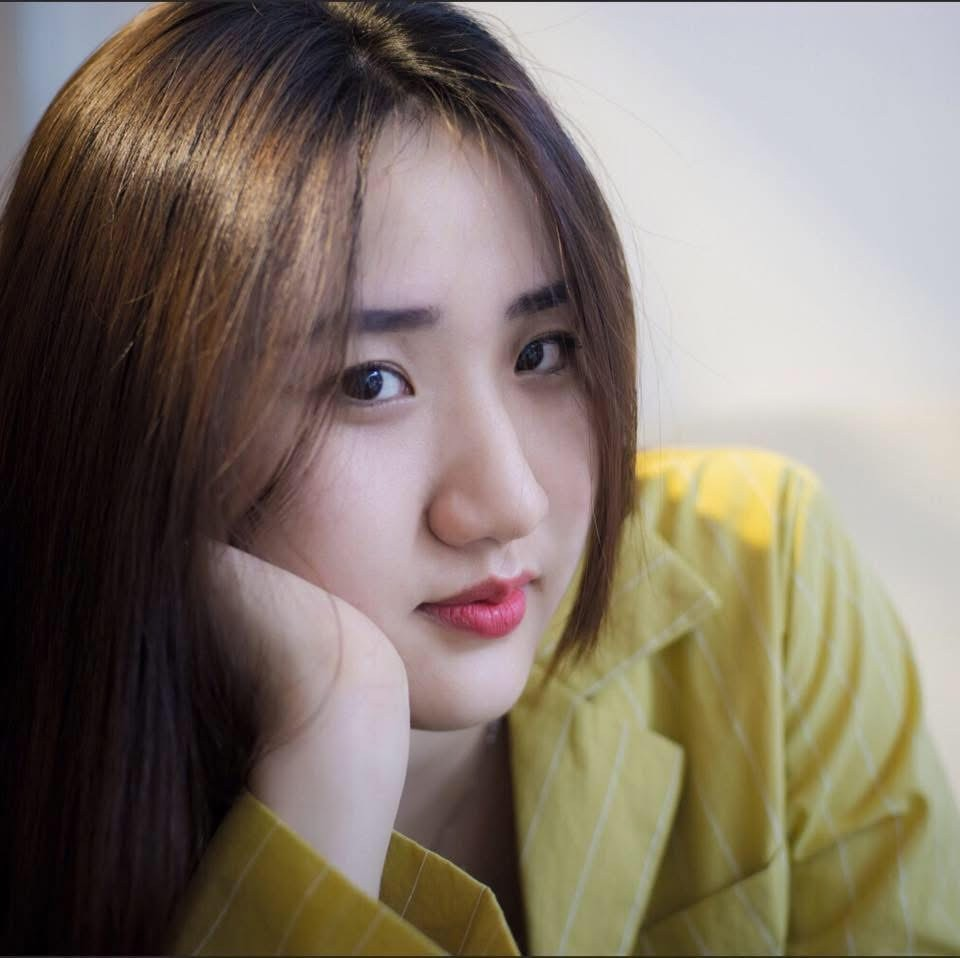
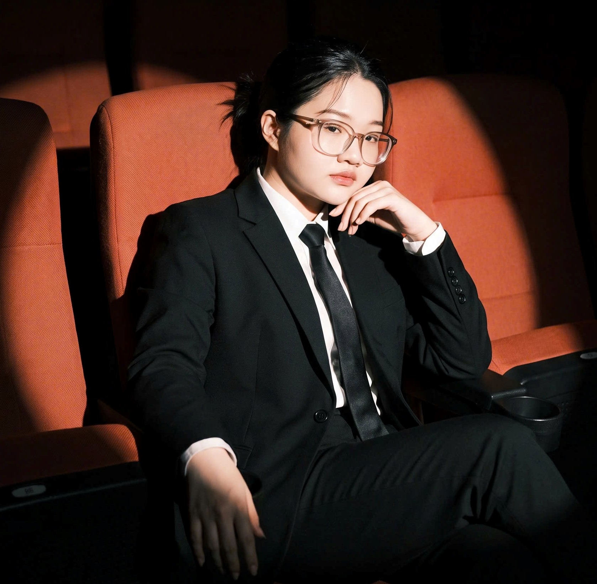

ABOUT · THE EDUCATOR TEAM
Thiết kế một cách học mới từ thiên nhiên.
Biomimicry Learning Lab được phát triển như một cầu nối giữa lớp học Công nghệ, nghiên cứu sinh học và quá trình thiết kế sáng tạo của học sinh THPT.
Bắt đầu Biomimicry MissionOBSERVEASKCREATE⌁
NHÓM TÁC GIẢ Ý TƯỞNG
Ba giáo viên.
Một learning journey.
Nhóm giáo viên môn Công nghệ lớp 12 cùng thiết kế trải nghiệm giúp học sinh nhìn thiên nhiên bằng con mắt của một nhà thiết kế.
01 · TECHNOLOGY 12Thầy Huỳnh Bảo Thiên
Đồng phát triển ý tưởng học tập tích hợp Design Thinking, Biomimicry và công nghệ thiết kế.

02 · TECHNOLOGY 12Cô Từ Song Ngân
Đồng phát triển tiến trình quan sát, phân tích và chuyển hóa chiến lược sinh học thành thiết kế.

03 · TECHNOLOGY 12Cô Dương Lê Hồng Thắm
Đồng phát triển hoạt động thực hành và công cụ đánh giá năng lực Biomimicry của học sinh.
DESIGNED FOR THE CLASSROOM
Từ Nature as Mentor
đến Prototype.
Tuần 1–2Design Thinking & Biomimicry→Tuần 3–4Observe & Biology → Design→Tuần 5–10Materials, Moodboard & Journal→Tuần 11–19Product Design Project→HKIILiving with Water